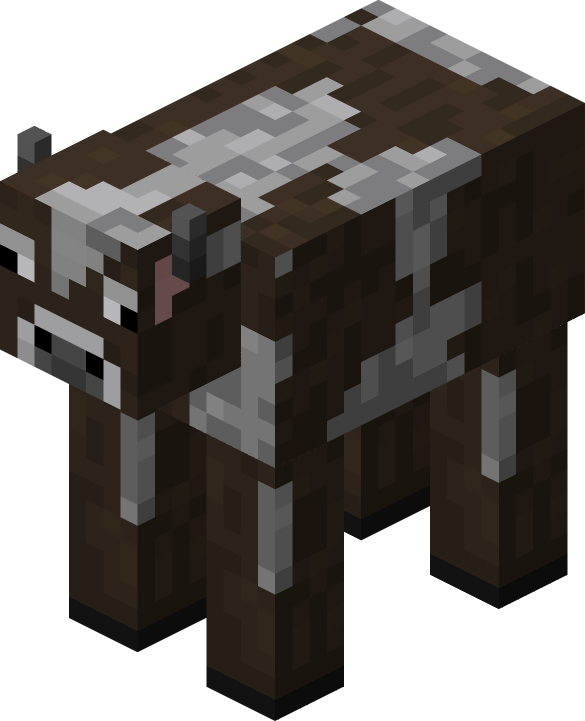
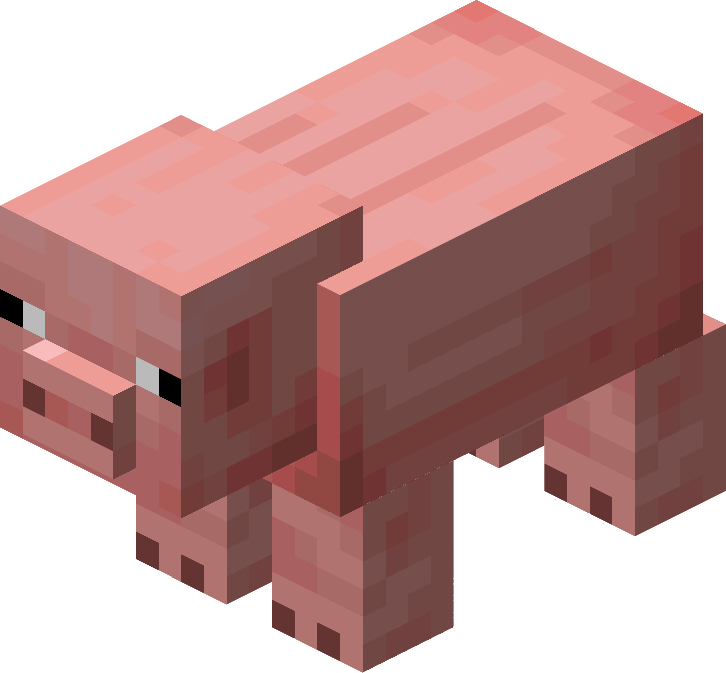
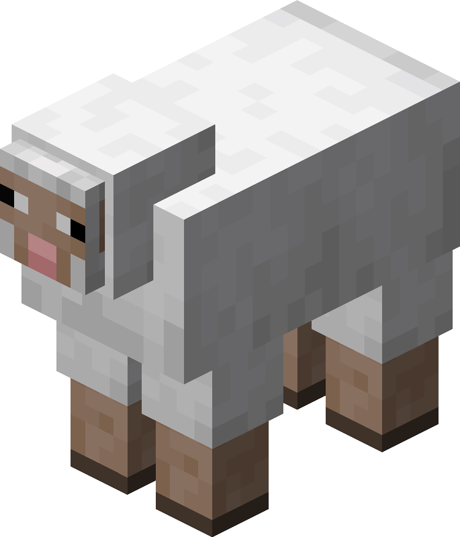
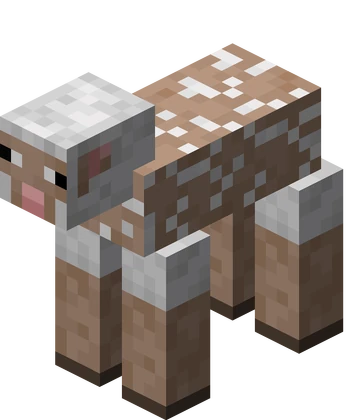
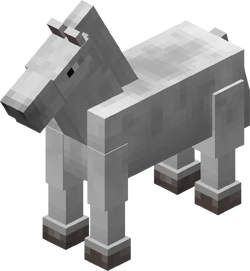
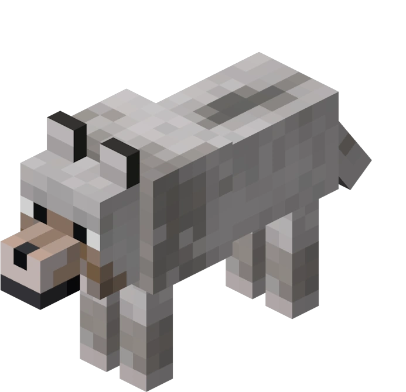
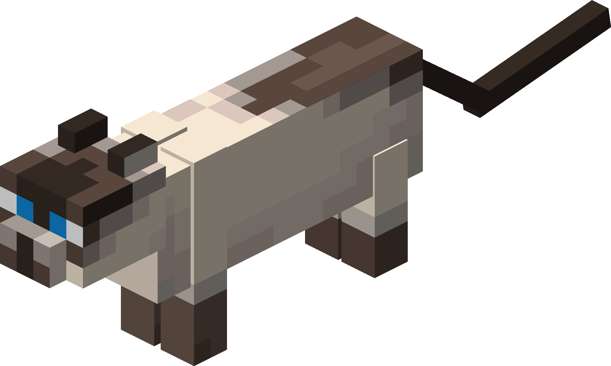
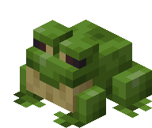

ORIGEN
Se dice que el Overworld fue creado cuando un Creeper ancestral explotó con tal potencia que formó
montañas, mares y valles.
Algunos sostienen que la luna cuadrada es en realidad el fragmento que quedó
de la explosión original.
FAUNA
En el Overworld, la fauna es variada y se puede encontrar tanto en los biomas más comunes como en los más remotos. Algunos de los animales más representativos son:
Haga click aqui para ver la lista de animales
-

Vacas
Las vacas son animales pacíficos que proporcionan leche, carne y cuero.
Se encuentran comúnmente en las llanuras y las zonas de pasto. -

Cerdos
Las vacas son animales pacíficos que proporcionan leche, carne y cuero.
Se encuentran comúnmente en las llanuras y las zonas de pasto. -
 
Ovejas
Las vacas son animales pacíficos que proporcionan leche, carne y cuero.
Se encuentran comúnmente en las llanuras y las zonas de pasto. -

Pollos
Las vacas son animales pacíficos que proporcionan leche, carne y cuero.
Se encuentran comúnmente en las llanuras y las zonas de pasto. -

Caballos
Las vacas son animales pacíficos que proporcionan leche, carne y cuero.
Se encuentran comúnmente en las llanuras y las zonas de pasto. -

Lobos
Las vacas son animales pacíficos que proporcionan leche, carne y cuero.
Se encuentran comúnmente en las llanuras y las zonas de pasto. -

Gatos
Las vacas son animales pacíficos que proporcionan leche, carne y cuero.
Se encuentran comúnmente en las llanuras y las zonas de pasto. -

Ranas
Las vacas son animales pacíficos que proporcionan leche, carne y cuero.
Se encuentran comúnmente en las llanuras y las zonas de pasto.
HABITANTES AUTÓCTONOS
Los aldeanos se comunican a través de "Hmmms" en diferentes tonos.
Su cultura se basa en intercambiar esmeraldas por cosas absurdamente inútiles, excepto por el bibliotecario, quien es el único con
habilidades mágicas para darte libros encantados.
También existen distintas culturas dependiendo del bioma y esto hace que sus vestimentas sean distintas: